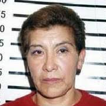

Juana Barraza is a former professional Mexican wrestler, born on December 27th, 1957 in Hidalgo, Mexico. At the age of 40 she began a massive killing spree that would go on to last eight whole years, with an estimated victim count of 42 to 48. Her main nickname, the “Old Lady Killer” was given because elderly women were her only targets.
Juana had a tragic upbringing, including an adulterous, alcoholic mother who reportedly pimped her out to man for three bottles of beer. This abuse would continue for the next four years until Juana could get out of Mexico City, after which she would become a lucha libre wrestler. She dubbed herself “The Lady of Silence” because of her own quiet and shy nature.
After having four kids from several failed marriages, Juana resorted to robbing elderly people’s homes with a friend to be able to live. They would dress in all white pretending to be nurses to gain entry to their homes, and then rob them once inside. Juana’s first murder occured on November 25th, 2002 when an old lady made a derogatory comment to Barraza once she let her inside her home. This caused Barraza to beat and then strangle her to death out of anger.
The next three months after that were silent. However, after this her activity spikes and she begins what would be her reign of terror at an accelerated rate. After a year, the police only knew that the killer was a tall, masculine female with short hair who was posing as a healthcare worker or nurse to gain their victim’s trust. The media critized the authorities for disregarding this This continued all the way until September 28th, 2005, her last murder before going silent for a couple months, prompting authorities to believe that she had possibly committed suicide.
On January 25th, 2006, Barraza was seen leaving the murder scene of her landlady, Ana Maria de los Reyes Alfaro, and was promptly arrested. This slipup alone seems to be what got her caught, as she had been interviewed on a TV program about wrestling a week earlier with arousing any suspicion about her.
Bernardo Bátiz, the chief prosecutor in Mexico City at the time, initially profiled Mataviejitas as having “a brilliant mind, [being] quite clever and careful”. The murders were brutal, obvious overzealous crimes of passion, the cause of death almost always manual strangulation or bludgeoning. This was usually accompanied by signs of horrible beatings and other ways Juana made her victims suffer, as well as Barraza robbing them afterwards.
Barraza is still alive in prison today. Juana cites her resentment to her own mother as the reason for the killings. She associated the women with her mother and truly believed that she was doing society a favor by getting rid of these women. She was a psychopath with no concept of remorse, explaining her ability to use such methods of deceit against the defenseless elderly and especially the numbers she killed in. She was one of the most prolific killers in recent history and her deliberate crimes of passion make her one of the most interesting killers among men and women.